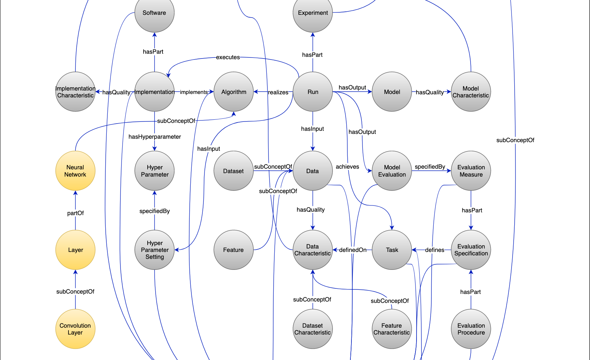
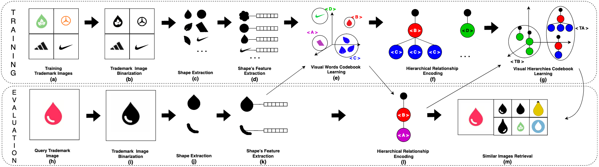
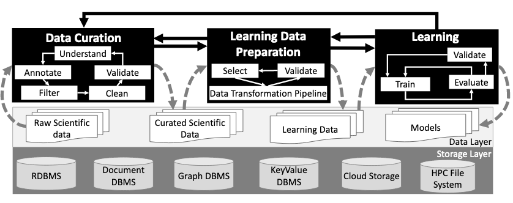
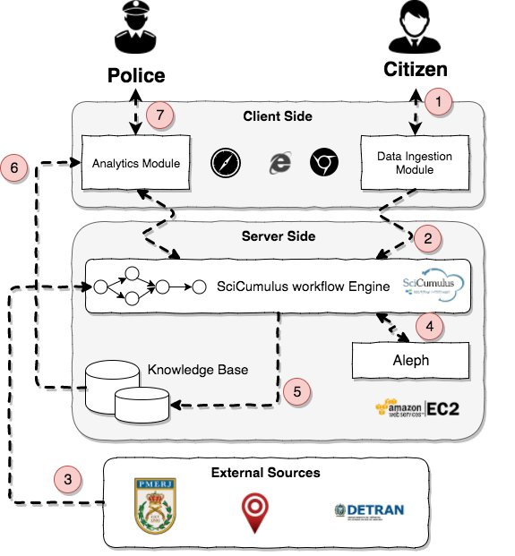

Vítor Nascimento LourençoMaster Candidate at Computing Intitute, Federal Fluminense UniversityResearch Software Engineer at Stealth Mode Startup Emails: vitorlourenco@id.uff.br | CV | ORCID | Google Scholar | LinkedIn | Lattes | GitHub |
Bio
- Vítor Lourenço is currently a Master Candidate at Computing Institute, Federal Fluminense University. His research interests includes machine learning, neural-symbolic integration, knowledge representation, and representation learning. Mainly, he works with learned representations of graphs and their applications in knowledge bases completion and reasoning over knowledge bases.
- Vítor received his B.Sc degree from the Federal Fluminense University.
News
- [01/11/2020] Our two new papers on handling cyclic machine learning workflows were accepted as a poster and an industry paper on ISWC: Cycle Orchestrator: A Knowledge-Based Approach for Structuring Cyclic ML Pipelines in the O&G Industry and A Knowledge-Based Approach for Structuring Cyclic Workflows;
- [30/09/2020] New preprint of Workflow Provenance in the Lifecycle of Scientific Machine Learning is available at ArXiv;
- [28/09/2020] Our ICSC 2020 paper "Managing Machine Learning Workflow Components" was invited to be extended at the IJSC and the extended version has just come out: Managing Machine Learning Workflow Components.
Selected Publications
Looking for full publication list? See my CV or Google Scholar.
2020

2019

Hierarchy-of-Visual-Words: a Learning-based Approach for Trademark Image Retrieval.
Vítor N. Lourenço, Gabriela G. Silva, and Leandro A.F. Fernandes.
Conference on Graphics, Patterns and Images (SIBGRAPI), 2019.
Best Computer Vision/Image Processing/Pattern Recognition Main Track Paper Award.
Best Work Award in the Workshop of Undergraduate Works (WUW).
[Paper] [Preprint] [Code] []
Vítor N. Lourenço, Gabriela G. Silva, and Leandro A.F. Fernandes.
Conference on Graphics, Patterns and Images (SIBGRAPI), 2019.
Best Computer Vision/Image Processing/Pattern Recognition Main Track Paper Award.
Best Work Award in the Workshop of Undergraduate Works (WUW).
[Paper] [Preprint] [Code] []

Provenance Data in the Machine Learning Lifecycle in Computational Science and
Engineering.
Renan Souza, Leonardo Azevedo, Vítor Lourenço, Elton Soares, Raphael Thiago, Rafael Brandão, Daniel Civitarese, Emilio Vital Brazil, Marcio Moreno, Patrick Valduriez, Marta Mattoso, Renato Cerqueira, and Marco AS Netto.
Workflows in Support of Large-scale Science (WORKS), 2019 co-located with the ACM/IEEE International Conference for High Performance Computing, Networking, Storage, and Analysis (SC), 2019.
[Paper] [Preprint] []
Renan Souza, Leonardo Azevedo, Vítor Lourenço, Elton Soares, Raphael Thiago, Rafael Brandão, Daniel Civitarese, Emilio Vital Brazil, Marcio Moreno, Patrick Valduriez, Marta Mattoso, Renato Cerqueira, and Marco AS Netto.
Workflows in Support of Large-scale Science (WORKS), 2019 co-located with the ACM/IEEE International Conference for High Performance Computing, Networking, Storage, and Analysis (SC), 2019.
[Paper] [Preprint] []
2018

Honors
- National Council for Scientific and Technological Development Fellowship, 2018.
Professional Activities
- Research Intern at IBM Research Brazil.
- Teaching assistant for Introduction to Data Science Bootcamp at School of Applied Mathematics, Getulio Vargas Fundation.